GLOWPORT ’88 · Controlled facade additions
Matched actual browser-rendered views at 4 selected original city blocks. The original road grid, 808 building footprints, density, districts, gardens, decorations and lamps remain unchanged. Only explicitly selected facade artwork is substituted. Day/night scene captures use the same original camera, time, weather and clock, with transient actors/UI omitted.
Original city restoration comparisons
Atmospheric composite differences may include the later targeted lighting refinement. The strict outside-facade check uses raw terrain pixels before atmosphere. Full details and selected rectangles are retained in each stage’s JSON report.
west 3 7 day
12:00 · CLEAR · camera 1020, 2485
Original c9b4af6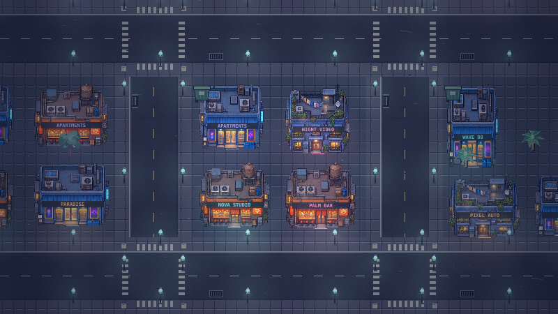
Stage c · 16 selected facades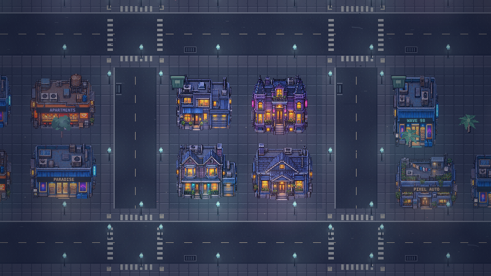
west 3 7 night
23:00 · CLEAR · camera 1020, 2485
Original c9b4af6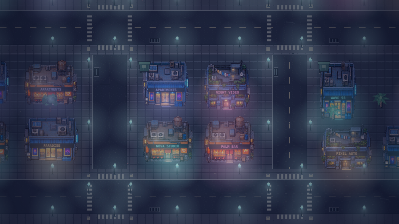
Stage c · 16 selected facades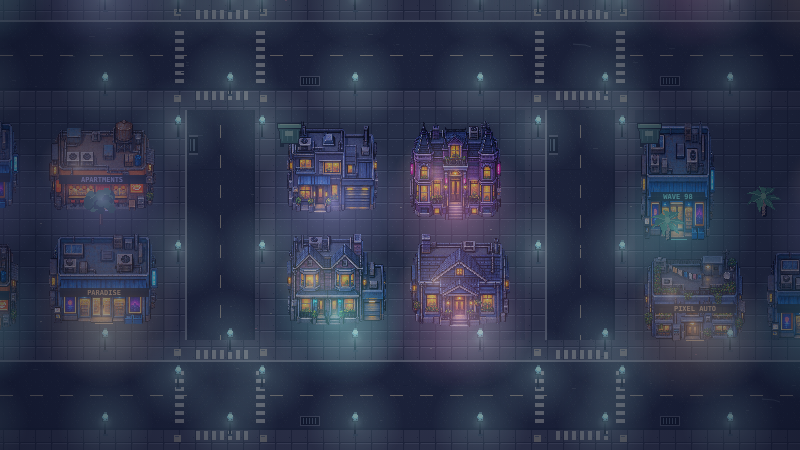
north 11 2 day
12:00 · CLEAR · camera 3900, 785
Original c9b4af6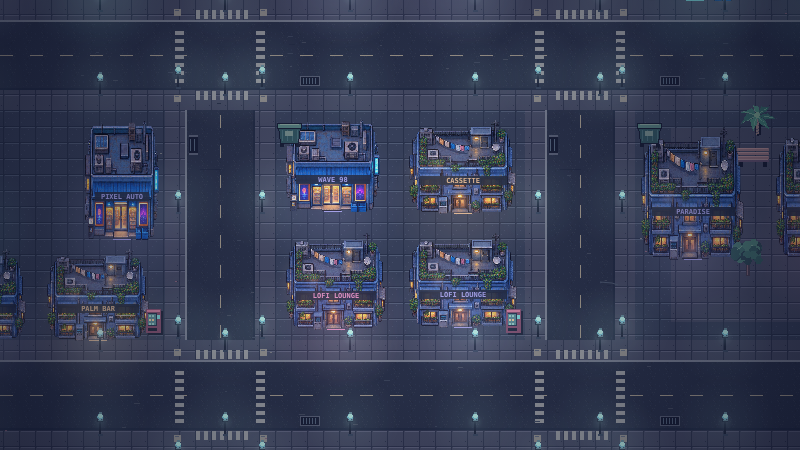
Stage c · 16 selected facades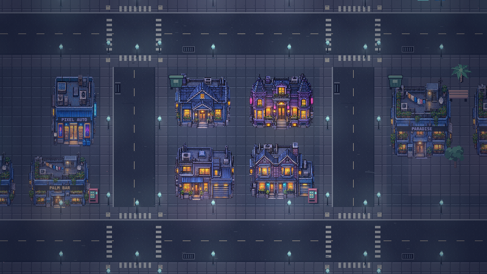
north 11 2 night
23:00 · CLEAR · camera 3900, 785
Original c9b4af6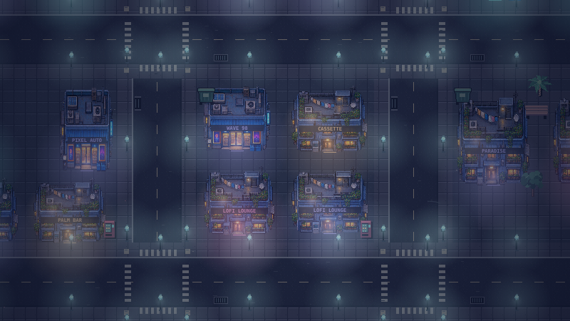
Stage c · 16 selected facades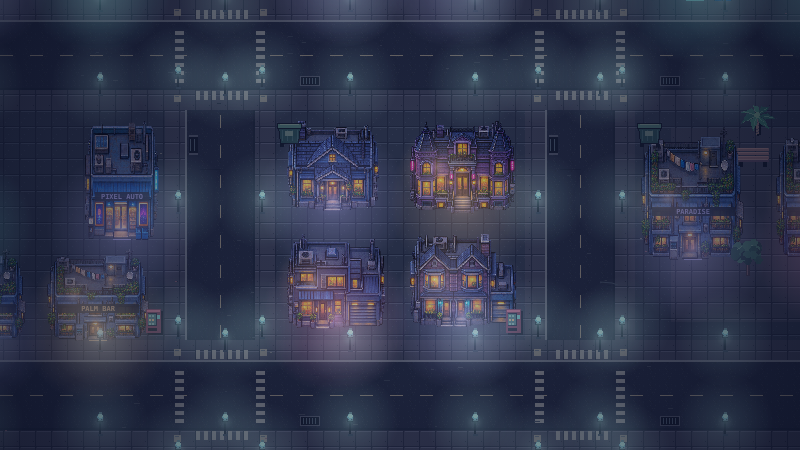
south 9 11 day
12:00 · CLEAR · camera 3180, 3845
Original c9b4af6Stage c · 16 selected facades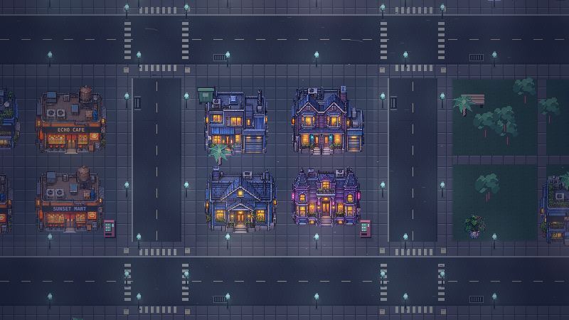
south 9 11 night
23:00 · CLEAR · camera 3180, 3845
Original c9b4af6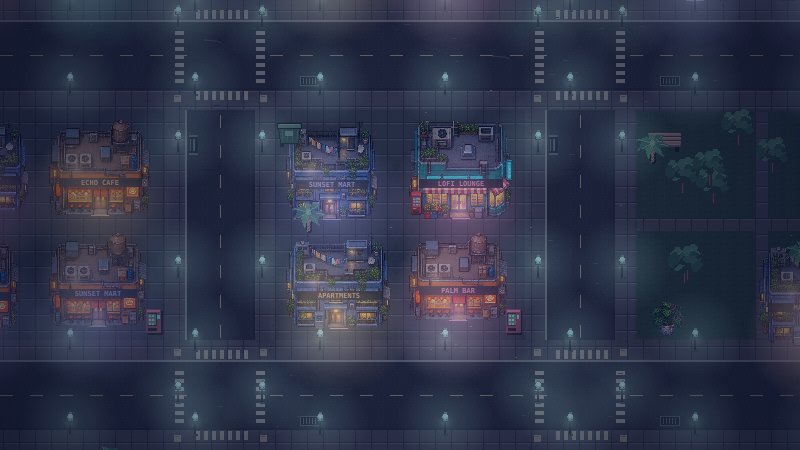
Stage c · 16 selected facades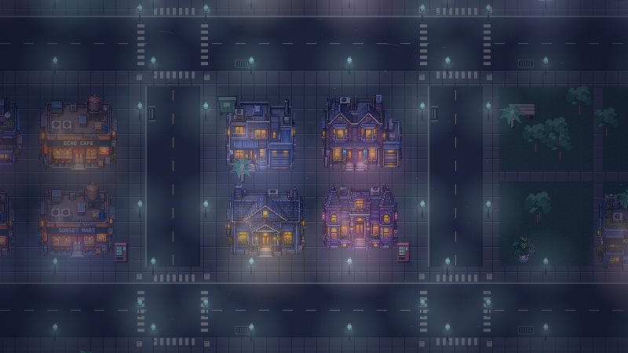
east 17 4 day
12:00 · CLEAR · camera 6060, 1465
Original c9b4af6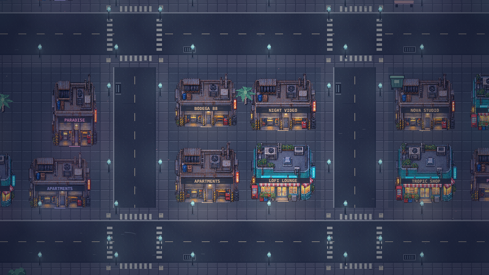
Stage c · 16 selected facades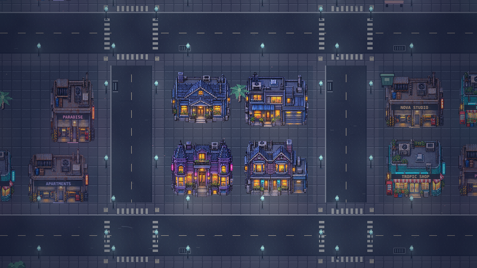
east 17 4 night
23:00 · CLEAR · camera 6060, 1465
Original c9b4af6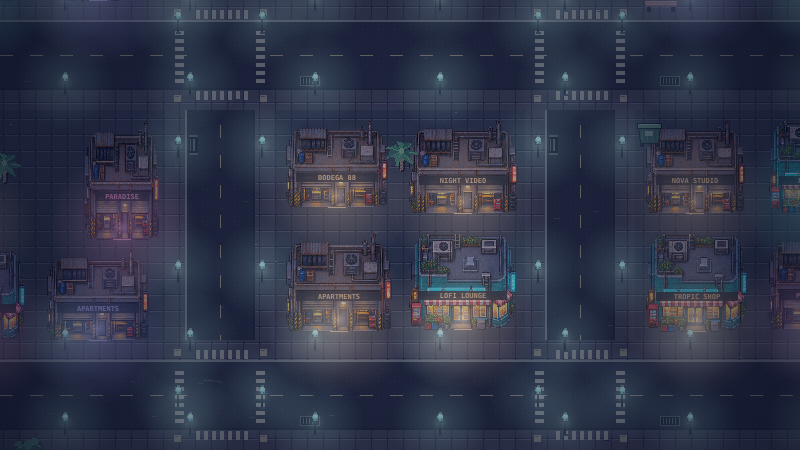
Stage c · 16 selected facades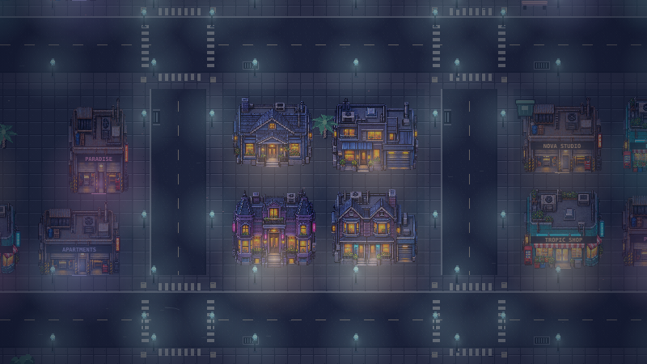